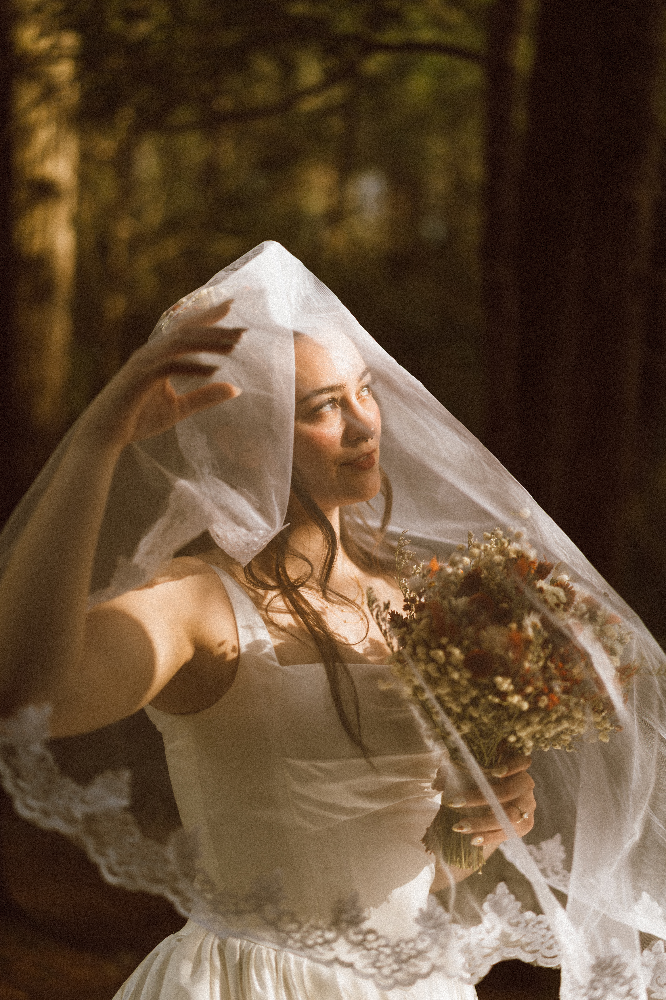
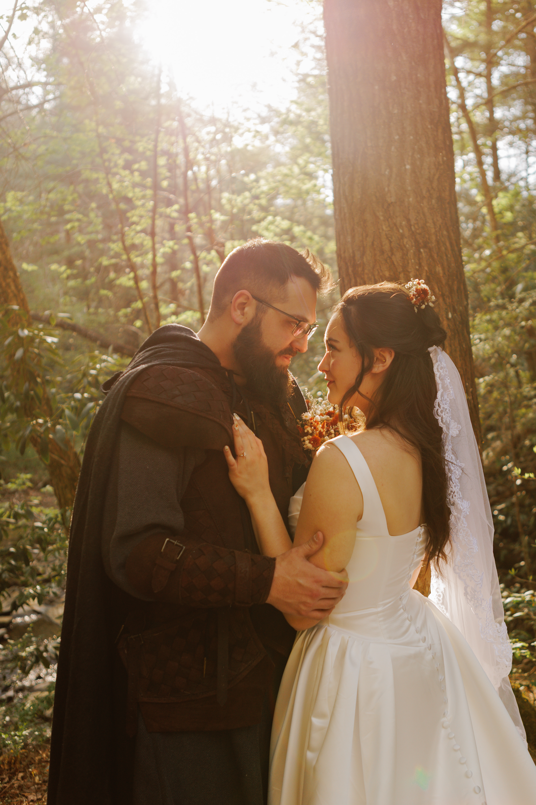
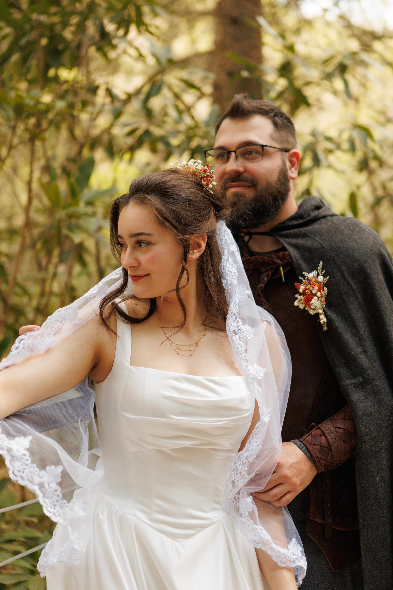

About the artist.
A little introduction, a little studio daydream, and the things that inspire the work.

Artist, daydreamer, collector of little joys.
I’m Skye, the artist behind Zotanovart Studios. I’m lovingly married to my husband, Tim.
At home, I’m kept company by our two cats, Loki (also known as Turkey) and Kiko, and our dog, Thor.
When I’m not painting, I’m usually working full time, spending time with my favorite people and pets, or finding inspiration in the colorful details of everyday life.
Making art is one of my favorite ways to slow down and bring a little more wonder into the world.
Remember when the world felt a little more magical?
I primarily work in oil, with gouache finding its way into the studio, too. My paintings often center on food and desserts, brought to life through bright colors, sparkles, stars, and playful details.
I love the balance between realism and whimsy: familiar subjects rendered with careful blending and a sense of nostalgia. I’m inspired by the way colors seemed to glow when we were children — when an ordinary treat, a sunny afternoon, or a tiny detail could feel extraordinary.


A cozy corner for making magic.
The studio is a place for experimenting, following a color, and letting an idea become something tangible. Some days are tidy; others are gloriously full of paint, half-finished thoughts, and a curious pet nearby.
Thank you for being here and taking a little time to explore my work. I’m so glad you stopped by.